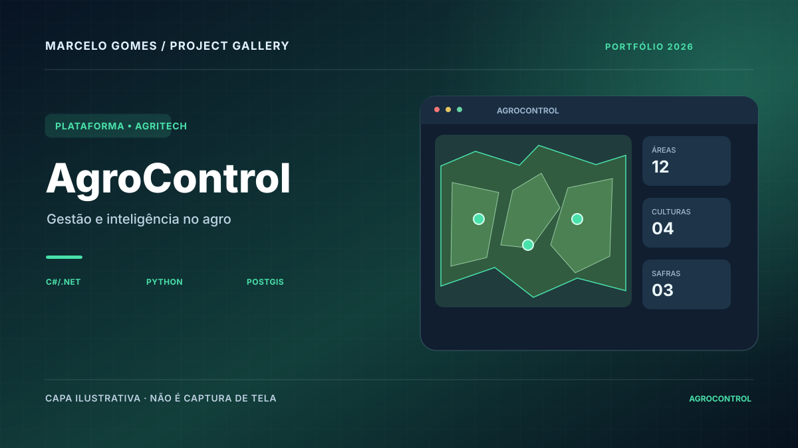
PLATAFORMA • AGRITECH
AgroControl
Plataforma modular para gestão rural, geodados, operação offline e serviços de inteligência.
C#/.NETPythonPostGIS
Explorar repositório Aplicações, produtos e laboratórios apresentados por contexto, tecnologias e identidade visual. Repositórios que compartilham o mesmo produto utilizam uma capa em comum para evitar duplicidade.

Plataforma modular para gestão rural, geodados, operação offline e serviços de inteligência.
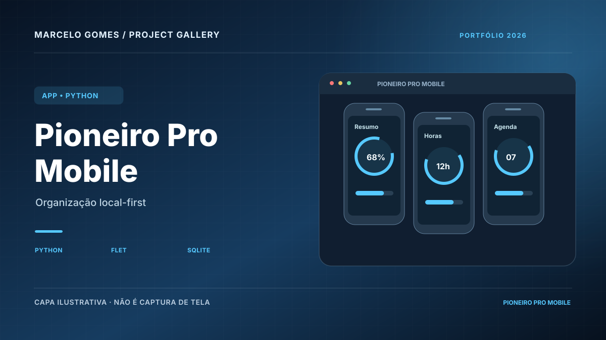
Aplicativo em Python/Flet para horas, atividades, agenda, revisitas e relatórios.
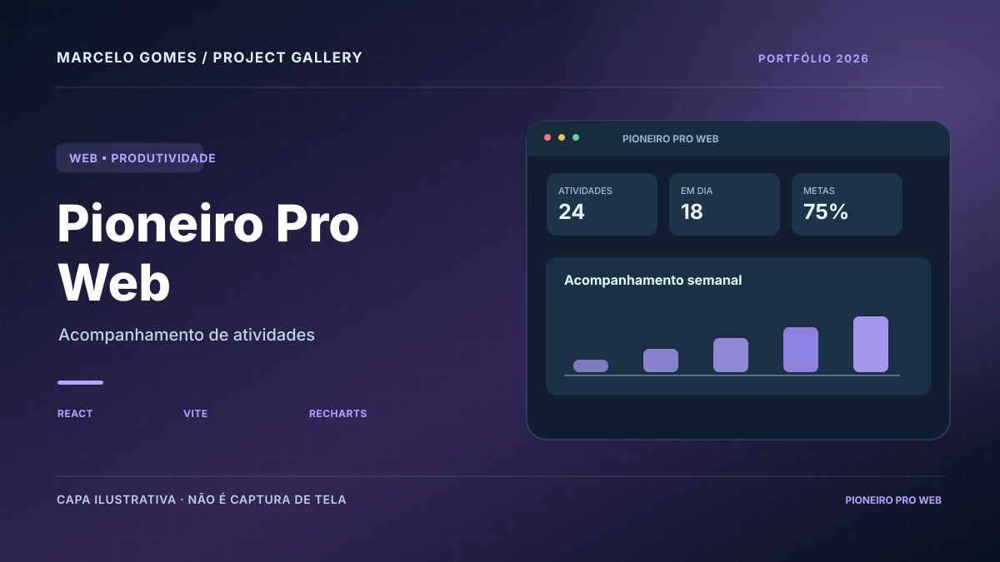
Interface web para organizar estudantes, visitas, lembretes e indicadores.
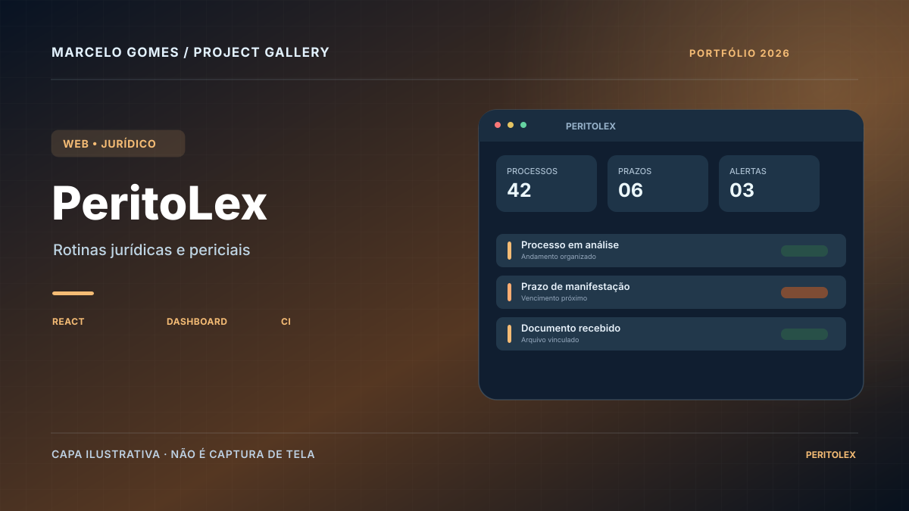
Controle de processos, prazos, documentos, alertas e visão operacional.
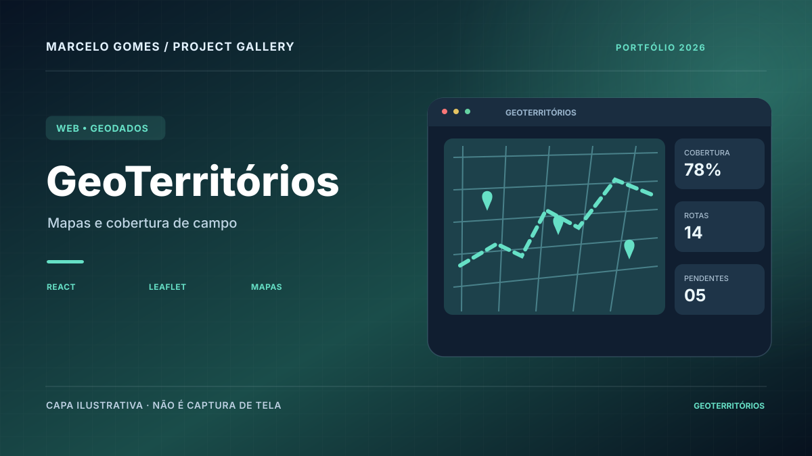
Organização de territórios, endereços, prédios e indicadores de cobertura.
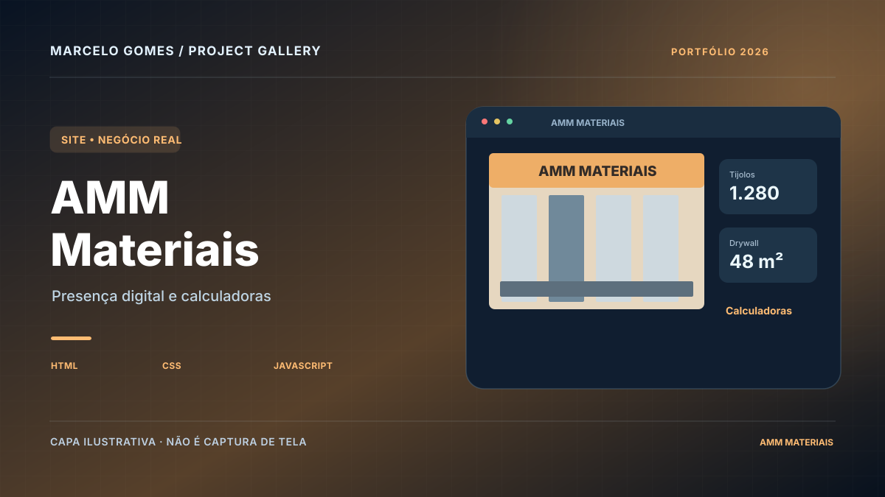
Site de materiais de construção com catálogo, contato e calculadoras práticas.
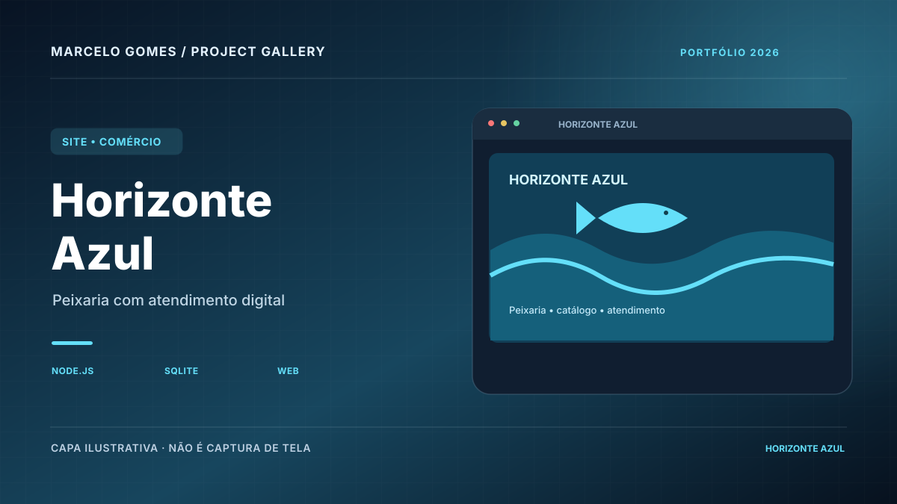
Site de peixaria com catálogo, assistente Peixinho Azul e backend próprio.
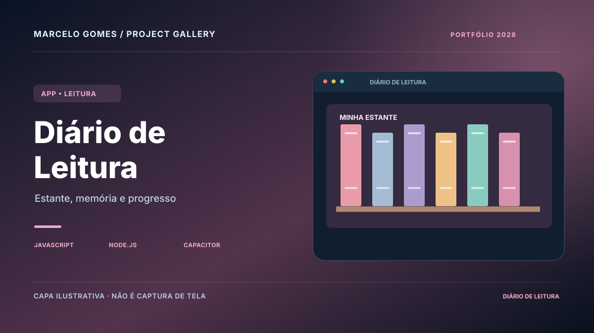
Diário digital para organizar leituras, livros desejados e experiências literárias.
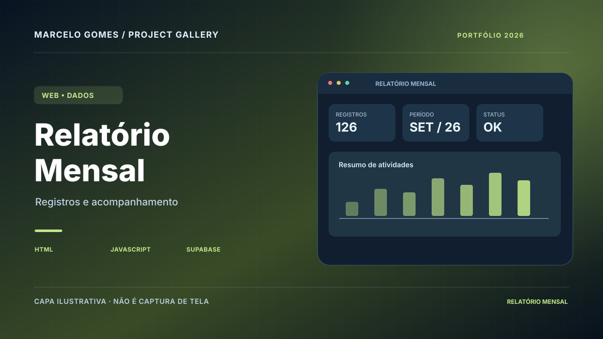
Painel web com autenticação e organização de dados de relatórios mensais.
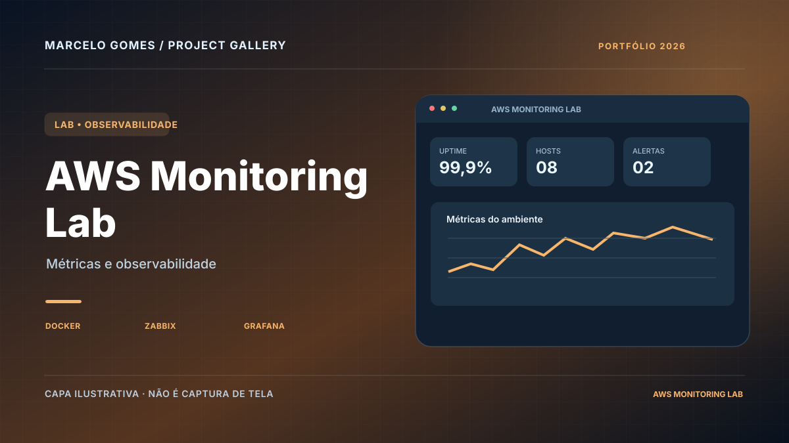
Laboratório local de observabilidade com Zabbix, Grafana e Docker Compose.
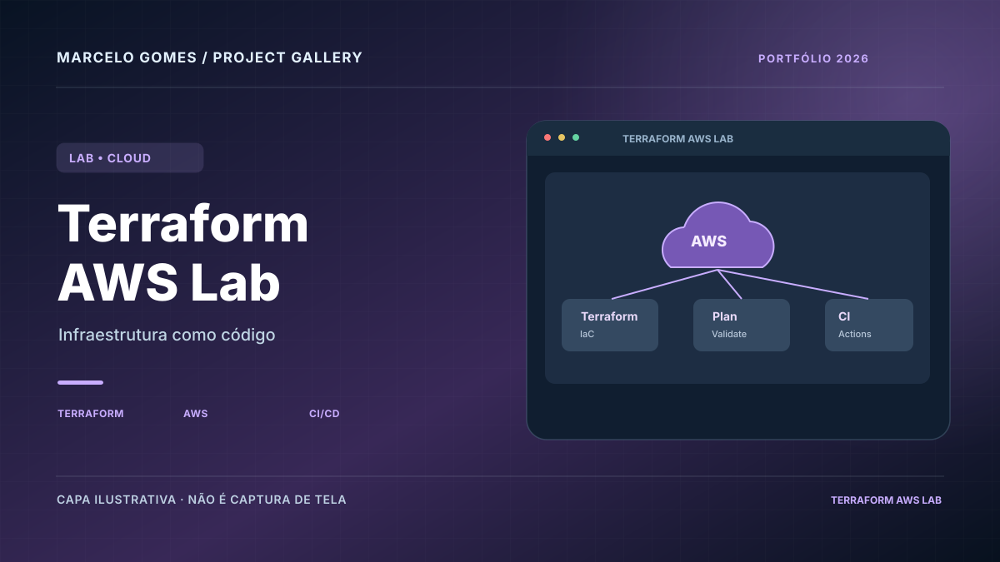
Laboratório de provisionamento versionado com Terraform e validação por CI.
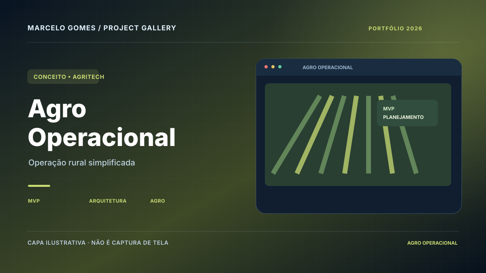
Produto em planejamento para talhões, máquinas, manutenção e estoque rural.
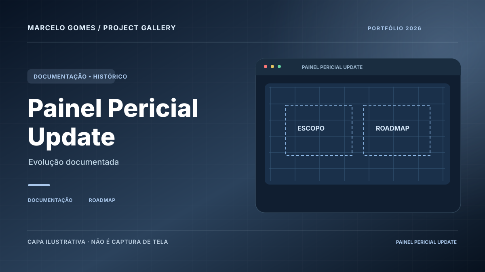
Repositório de documentação e histórico; ainda não possui aplicação executável.
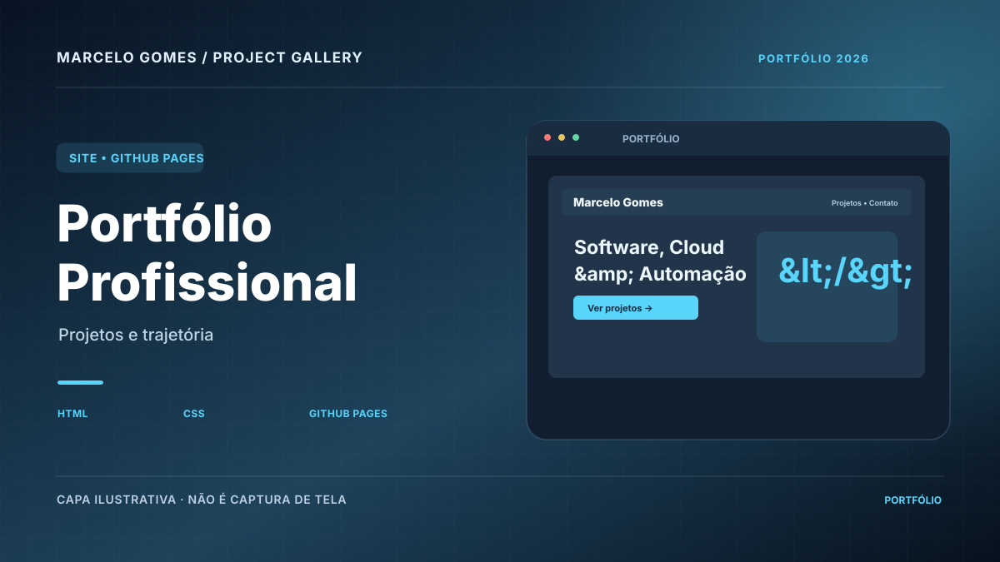
Site profissional para apresentar experiências, soluções e projetos técnicos.
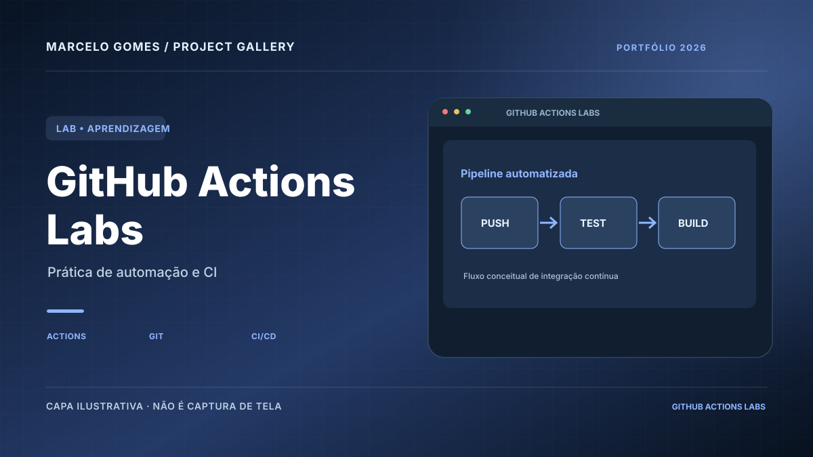
Exercícios de workflows, testes, branches e integração contínua.